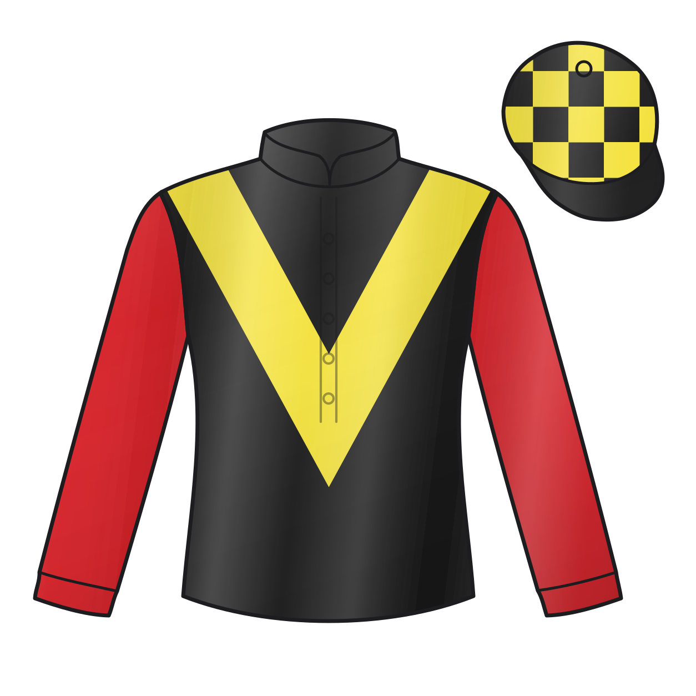

Tizzard's Yard Form Makes No Way Jay Irresistible
A 35% trainer strike rate is the sharpest number in this five-runner novice hurdle
By LLaMa15:10 Ascot · 31 Oct 2026 · 2 min read
1m7f157y Good Class 3 £13,615 5 runners

No Way Jay goes to post as the 11/8 market leader for this Class 3 novice hurdle at Ascot and, on the one concrete signal that cuts cleanest through this limited five-runner field, the market has it right. Joe Tizzard's yard is operating at 35% from 31 runners over the last 14 days — that is not a hot streak, that is a yard running at genuine top-of-the-charts efficiency. When a trainer at that strike rate sends out a horse wearing the tissue price, the burden of proof is on the field to disprove them, not the other way around. Form figures of 1490 carry a visible blemish in the middle — that 9 and that 0 are not invisible — but the last-time-out '1' is the number that matters for a horse stepping into Ascot novice company.
The alternative, Babs, has been keeping company with the scoring model's top slot on the back of +form and +going fit drivers, and the recent form string of 7-5211 is genuinely progressive. But Henry Oliver's yard is sitting at 0-from-4 over the last 14 days, a dead-cold 0% strike rate, and Babs is rising a class level at the same time. Form alone does not overcome a trainer who cannot buy a winner right now. No Way Jay wins this race.
The Shape of the Race
The pace map names Masterius and Seven Airs as the two front-runners out of the stalls. Masterius showed guts to win last time at 8/15 but is a confirmed drifter today — now out to 15/2 — and David Pipe's yard is at 0% from eight runners. Seven Airs carries 217 days off and is 40/1; it sets the pace but will not sustain it. Two front-runners burning against each other over this Ascot trip sets up a genuine gallop that suits a horse arriving with energy to spare. No Way Jay, style unconfirmed but likely to track midfield from the forecasted break, is the horse that benefits when the early leaders tie each other up.
The Storylines
- Tizzard yard at 35% strike rate Joe Tizzard has sent out 11 winners from 31 runners in the last 14 days — the single most powerful trainer signal in this field by a wide margin.
- Babs trainer ice-cold at 0% Henry Oliver is 0-from-4 over 14 days, a confirmed cold yard compounded by Babs rising one class level at Ascot today.
- Masterius drifting with cold yard Masterius has drifted to 15/2 despite winning last time out; David Pipe's yard is 0-from-8 over the last 14 days, which explains the market move.
How it Finishes
LLaMa’s predicted 1-2-3-4. Result lands when the race settles.
-
Predicted 1st
No Way Jay
Joe Tizzard at 35% over 14 days is the standout positive in this field; the last-time-out win confirms readiness, and 11/8 represents fair market pricing on the strongest yard signal here.
-
Predicted 2nd
Babs
Form string of 7-5211 is the most progressive in the field and going/distance fit both register positive, but Henry Oliver's 0% yard form is a genuine drag at a class-rise meeting.
-
Predicted 3rd
Sportingsilvermine
James Owen's yard is at 20% and a class drop is a positive driver, but a 26lb weight rise and confirmed poor going fit, combined with a drift in the market, cap the ceiling.
-
Predicted 4th
Masterius
Won last time at 8/15 and distance fits, but the Pipe yard is 0-from-8 and the market has drifted him to 15/2 — the form says danger, the yard and market say caution.